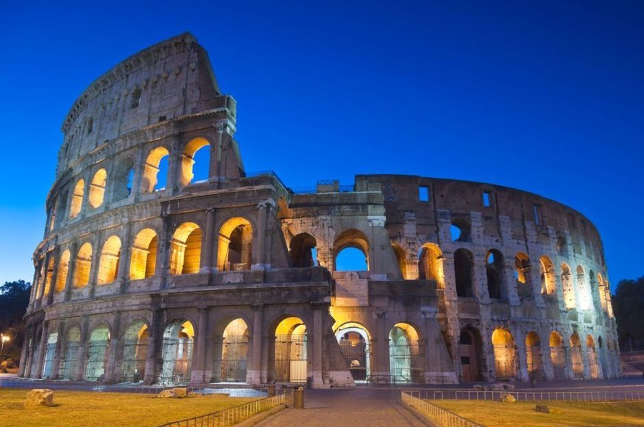
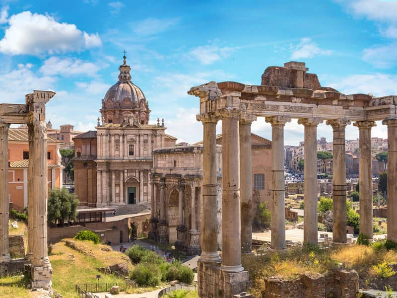

Rome is de hoofdstad van Italië en het bestuurlijk centrum van de regio Lazio en de Città Metropolitana di Roma Capitale. De stad heeft circa 2,8 miljoen inwoners en bestaat uit zeven heuvels, het is de grootste stad van Italië. De stad ligt in het midden van het land en aan de rivier de Tiber. In Rome ligt een ander land, namelijk Vaticaanstad. Dit is de kleinste staat ter wereld.
Bezienswaardigheden:
- Het Colosseum
Het Colosseum dat oorspronkelijke het Amphitheatrum Flavium heette, is een ovaalvormig amfitheater uit de Romeinse Tijd. Het Colosseum werd in slecht acht jaar gebouwd, de constructie duurde van het het jaar 72 (keizer Vespasianus) tot het jaar 80 (Keizer Titus, zoon van Vespasianus). Het was het grootste amfitheater uit het Romeinse rijk en had een capaciteit van 50.000 toeschouwers. Het Colosseum werd voor meerdere dingen gebruikt zoals, gladiatorengevechten en toneelvoorstellingen
- De Trevifontein
De populairste, grootste, dertig meter hoog, twintig meter breed en bekendste fontein van Rome is de Trevi fontein. Er wordt gezegd dat als je over je schouder een munt in de fontein gooit, je Rome nog een keer zal bezoeken. Je kunt je voorstellen dat als iedereen die Rome bezoekt een munt in de Trevi fontein gooit, er misschien wel meer munten dan water in de fontein zal zijn. Het is dan ook maar goed dat wekelijks de munten uit de fontein gehaald worden. Deze munten worden gebruikt voor een goed doel. De Trevifontein werd gebouwd in de vijftiende eeuw.

- Het Forum Romanum
Het Forum Romanum bestaat uit een grote vlakte vol ruïnes. Ooit was het Forum Romanum het bruisende centrum van Rome. Iedereen kwam hier naar toe. Er werd gehandeld, over politiek gepraat, belangrijke beslissingen werden bij het Forum Romanum genomen. Er waren verschillende tempels waar mensen konden bidden. In dit oude centrum staan nog ruïnes die de moeite waard zijn om te bekijken zoals, de tempel van Vespasianus en triomfbogen. Het Forum Romanum ligt vlak achter het Colosseum dus deze twee plekken zijn leuk om te combineren in een dag.
